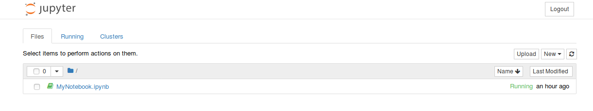

TP 1
Contents
TP 1#
Objectifs#
Analyser et travailler avec des fichiers CSV, TSV et JSON
Interroger des sources de données externes
Analyses de données
Exercices#
Installation et mise en place de pip, scikit-learn et jupyter
Analyse et lecture de fichiers CSV/TSV
Analyse et lecture des fichiers JSON
Interrogation de sources de données externes (API)
Effectuer des analyses de données classiques
Captures d’écran#
Des captures d’écran ont été fournies afin que vous puissiez vérifier et comparer si le résultat que vous obtenez correspond à ce que nous attendons de l’étape (ou de l’exercice) en question.
Exercice 1#
Installation#
Exécutez les commandes suivantes sur vos machines virtuelles
pip
Pour installer pip, vous devez exécuter les commandes suivantes sur votre terminal :
Veuillez remarquer que toutes les lignes commençant par “$” doivent être exécutées sur le terminal.
$ sudo apt update
$ sudo apt install python3-dev
$ sudo apt install python3-pip
Installation de virtualenv
$ sudo apt install virtualenv
Installation dans virtualenv
$ virtualenv --system-site-packages -p python3 env
$ source env/bin/activate
Installation de Jupyter
$ python3 -m pip install --upgrade --force-reinstall --no-cache jupyter
Installation de scikit-learn
$ python3 -m pip install scikit-learn
Installation de numpy
$ python3 -m pip install numpy
Installation de pandas
$ python3 -m pip install pandas
Installation de matplotlib
$ python3 -m pip install matplotlib
Hello World!#
Si votre installation est réussie, vous pouvez exécuter la commande suivante pour cloner le répertoire:
$ git clone https://github.com/johnsamuelwrites/DataMining
$ cd DataMining
Lancez Jupyter Notebook (ou Lab)
$ jupyter notebook
ou
$ jupyter lab
Une nouvelle page apparaîtra sur votre navigateur et vous verrez l’image suivante 
Cliquez sur l’onglet “Running”. Vous ne voyez aucun notebook en cours d’exécution (si c’est la première fois que vous utilisez jupyter).

Retournez à l’onglet “Files”, cliquez sur “New” et choisissez Python3 sous Notebook.

Un nouvel onglet s’ouvrira comme indiqué ci-dessous. Inscrivez le code suivant dans la cellule.
print("Hello World!")

Vous pouvez vous déplacer dans n’importe quelle cellule et appuyer sur “Run”.
Par défaut, votre notebook est nommé “Untitled”. Vous pouvez le renommer comme indiqué ci-dessous, en cliquant sur le nom “Untitled” et en lui donnant un nouveau nom.

Retournez maintenant à l’onglet “Files” et vous pouvez voir le Notebook renommé. Vous pouvez cliquer sur votre Notebook à tout moment pour continuer à travailler.

Maintenant, continuons à travailler sur votre Notebook actuel. Ecrivez le code suivant pour vérifier si scikit est correctement installé.
Le code ci-dessous indique les ensembles de données disponibles de scikit.
from sklearn import datasets
print(datasets.__all__)

Maintenant, vous êtes prêt à exécuter le code !
Remarque:, Vous pouvez arrêter le Notebook Jupyter à tout moment en tapant “Ctrl+c” sur le terminal et en appuyant sur “y” pour confirmer l’arrêt.
Effectuez les exercices (facultatifs) donnés dans le TP 0
Exercice 2#
La plupart du temps, nous travaillons avec des fichiers CSV (comma-separated values) pour l’analyse des données. Un fichier CSV est constitué d’une ou plusieurs lignes et chaque ligne comporte une ou plusieurs valeurs séparées par des virgules. On peut considérer chaque ligne comme une rangée et chaque valeur d’une ligne comme une valeur de colonne. La première ligne est parfois utilisée pour décrire les noms des colonnes.
Copier le fichier pl.csv dans votre répertoire de travail actuel (où vous exécutez Jupyter : TP1) et utilisez le code suivant pour analyser le fichier csv. Remarquez les noms de colonnes et les types de données (U100, i4), où U100 correspond à une chaîne unicode de 100 caractères et i4 correspond à un entier signé de 32 bits.
Veuillez consulter la liste complète des dtypes ici.
import numpy as np
dataset = np.loadtxt(
"../../data/pl.csv", # Remplacez cette valeur par le chemin d'accès de votre fichier CSV.
dtype={"names": ("name", "year"), "formats": ("U100", "i4")},
skiprows=1, # passez la première ligne, puisque c'est l'en-tête
delimiter=",", # le séparateur est une virgule puisqu'il s'agit d'un fichier CSV.
encoding="UTF-8", # encodage UTF-8
)
print(dataset)

Soutien du CSV en numpy (Ref: (https://docs.scipy.org/doc/numpy/reference/generated/numpy.loadtxt.html)) est différent du défaut de Python CSV reader (Ref: (https://docs.python.org/3.9/library/csv.html)) en raison de sa capacité à prendre en charge les types de données (Ref: (https://docs.scipy.org/doc/numpy/reference/arrays.dtypes.html)). Avant de continuer, examinez en profondeur numpy.loadtxt (Ref: (https://docs.scipy.org/doc/numpy/reference/generated/numpy.loadtxt.html)).
Copier le fichier pl.tsv dans votre répertoire de travail actuel et utilisez le code suivant pour analyser le fichier TSV.
import numpy as np
dataset = np.loadtxt(
"../../data/pl.tsv", # Remplacez cette valeur par le chemin d'accès de votre fichier TSV.
dtype={"names": ("name", "year"), "formats": ("U100", "i4")},
skiprows=1,
delimiter="\t", # le séparateur est '\t' puisqu'il s'agit d'un fichier TSV.
encoding="UTF-8",
)
print(dataset)
Les changements dans le code ci-dessus par rapport au précédent. Un fichier TSV est un fichier séparé par des tabulations, c’est-à-dire que les valeurs des colonnes sont séparées par un tabulation ((\t)).
print(len(dataset))
Vous pouvez également afficher la sortie des variables et méthodes dans un Notebook sans print()
len(dataset)
Exercice 3#
La plupart des sources de données externes peuvent fournir leurs données au format JSON. Notre prochain exercice consiste à analyser les fichiers JSON. Copiez le fichier pl.json à votre répertoire de travail actuel et utilisez le code suivant pour analyser le fichier JSON. Dans cet exercice, nous utilisons Pandas python package (Ref: (https://pandas.pydata.org/pandas-docs/stable/)) d’analyser le fichier JSON pour obtenir un Pandas DataFrame (Ref: (https://pandas.pydata.org/pandas-docs/stable/generated/pandas.DataFrame.html)). Essayez d’utiliser des méthodes comme transpose (Ref: (https://pandas.pydata.org/pandas-docs/stable/generated/pandas.DataFrame.transpose.html#pandas.DataFrame.transpose)), count (Ref: (https://pandas.pydata.org/pandas-docs/stable/generated/pandas.DataFrame.count.html#pandas.DataFrame.count)) etc.
Avant de continuer cet exercice, veuillez vous entraîner à travailler avec des pandas. Consultez 10 minutes to pandas (Ref: (https://pandas.pydata.org/pandas-docs/stable/10min.html)).
from pandas import json_normalize
import pandas as pd
import json
data = json.load(open("../../data/pl.json"))
dataframe = json_normalize(data)
print(dataframe)
Et l’affichage sans print()
dataframe
Pour afficher les valeurs de la colonne year:
dataframe["year"]
Pour afficher les valeurs de la colonne languageLabel:
dataframe["languageLabel"]
Obtenir des informations importantes comme le nombre, le minimum, le maximum en utilisant describe()
dataframe.describe()
Pour obtenir les valeurs uniques de la colonne year :
dataframe["year"].unique()
Pour obtenir les valeurs uniques de la colonne languageLabel :
dataframe["languageLabel"].unique()
Pour trier les valeurs par une ou plusieurs colonnes
dataframe.sort_values(["year"])
dataframe.sort_values(["year", "languageLabel"])
dataframe.sort_values(["languageLabel"])
Pour obtenir les types de données des colonnes
dataframe.dtypes
Exercice 4#
Dans cet exercice, nous examinerons comment télécharger des données à partir des sources de données externes utilisant des interfaces d’interrogation spéciales. Par exemple, les données ci-dessus ont été obtenues à partir de Wikidata query

Vous trouverez ci-dessous le code permettant de lire les données provenant d’une source externe. Utilisez ce url: (https://query.wikidata.org/sparql?query=SELECT ?languageLabel (YEAR(?inception) as ?year)%0AWHERE%0A%7B%0A%20%20%23instances%20of%20programming%20language%0A%20%20%3Flanguage%20wdt%3AP31%20wd%3AQ9143%3B%0A%20%20%20%20%20%20%20%20%20%20%20%20wdt%3AP571%20%3Finception%3B%0A%20%20%20%20%20%20%20%20%20%20%20%20rdfs%3Alabel%20%3FlanguageLabel.%0A%20%20FILTER(lang(%3FlanguageLabel)%20%3D%20%22en%22)%0A%7D%0AORDER%20BY%20%3Fyear%0ALIMIT%20100&format=json).
import urllib.request
import json
import pandas as pd
url = "https://query.wikidata.org/sparql?query=SELECT%20%3FlanguageLabel%20(YEAR(%3Finception)%20as%20%3Fyear)%0AWHERE%0A%7B%0A%20%20%23instances%20of%20programming%20language%0A%20%20%3Flanguage%20wdt%3AP31%20wd%3AQ9143%3B%0A%20%20%20%20%20%20%20%20%20%20%20%20wdt%3AP571%20%3Finception%3B%0A%20%20%20%20%20%20%20%20%20%20%20%20rdfs%3Alabel%20%3FlanguageLabel.%0A%20%20FILTER(lang(%3FlanguageLabel)%20%3D%20%22en%22)%0A%7D%0AORDER%20BY%20%3Fyear%0ALIMIT%20100&format=json"
response = urllib.request.urlopen(url)
responsedata = json.loads(response.read().decode("utf-8"))
array = []
for data in responsedata["results"]["bindings"]:
array.append([data["year"]["value"], data["languageLabel"]["value"]])
dataframe = pd.DataFrame(array, columns=["year", "languageLabel"])
dataframe = dataframe.astype(dtype={"year": "<i4", "languageLabel": "<U200"})
print(dataframe)
dataframe
dataframe["year"].describe()
dataframe["languageLabel"].describe()
dataframe.dtypes
Exercice 5#
Ce exercice utilisera quelques analyses de données de base. Poursuivant avec le code de l’exercice 1.4, comptons le nombre de langages de programmation sortis en un an.
grouped = dataframe.groupby("year").count()
grouped
Vous pouvez également utiliser plusieurs fonctions d’agrégation en utilisant agg()
grouped = dataframe.groupby("year").agg(["count"])
grouped
Jusqu’à présent, nous avons travaillé avec des tableaux à deux colonnes. Maintenant, nous nous concentrons sur des tableaux à trois colonnes (langage de programmation, année, paradigme). Copiez le fichier plparadigm.json dans votre répertoire de travail. Et testez le programme suivant.
from pandas.io.json import json_normalize
import pandas as pd
import json
jsondata = json.load(open("../../data/plparadigm.json"))
array = []
for data in jsondata:
array.append([data["year"], data["languageLabel"], data["paradigmLabel"]])
dataframe = pd.DataFrame(array, columns=["year", "languageLabel", "paradigmLabel"])
dataframe = dataframe.astype(
dtype={"year": "int64", "languageLabel": "<U200", "paradigmLabel": "<U200"}
)
grouped = dataframe.groupby(["year", "paradigmLabel"]).agg(["count"])
grouped
Testez maintenant le programme suivant. Comparez la différence de rendement.
grouped = dataframe.groupby(["paradigmLabel", "year"]).agg(["count"])
grouped
Votre prochain objectif est de lancer la requête suivante pour obtenir la population des informations sur les différents pays (limitées à 10000 lignes). Exécutez le suite à la requête sur Wikidata query service et téléchargez le fichier JSON.
SELECT DISTINCT ?countryLabel (YEAR(?date) as ?year) ?population
WHERE {
?country wdt:P31 wd:Q6256; #Country
p:P1082 ?populationStatement;
rdfs:label ?countryLabel. #Label
?populationStatement ps:P1082 ?population; #population
pq:P585 ?date. #period in time
FILTER(lang(?countryLabel)="en") #Label in English
}
ORDER by ?countryLabel ?year
LIMIT 1000
Maintenant, calculez et affichez les informations suivantes (en utilisant différentes [opérations disponibles dans la bibliothèque des pandas] (https://pandas.pydata.org/pandas-docs/stable/10min.html) (Ref: (https://pandas.pydata.org/pandas-docs/stable/10min.html))):
La population des pays dans l’ordre alphabétique de leur nom et par ordre croissant d’année.
La dernière population disponible de chaque pays
Le pays ayant la population la plus faible et la plus élevée (compte tenu de la population la plus récente)
Votre prochain objectif est de lancer la requête suivante pour obtenir des informations relatives aux articles scientifiques publiés après 2010 (limité à 10 000 lignes). Lancer la requête suivante sur Wikidata query service et téléchargez le fichier JSON. Il vous donne les informations suivantes relatives à la recherche scientifique article : titre, sujet principal et année de publication.
SELECT ?title ?subjectLabel ?year
{
?article wdt:P31 wd:Q13442814; #scientific article
wdt:P1476 ?title; #title of the article
wdt:P921 ?subject; #main subject
wdt:P577 ?date. #publication date
?subject rdfs:label ?subjectLabel.
BIND(YEAR(?date) as ?year).
#published after 2010
FILTER(lang(?title)="en" &&
lang(?subjectLabel)="en" && ?year>2010)
}
LIMIT 10000
Maintenant, calculez et affichez les informations suivantes (en utilisant diverses opérations disponibles dans la bibliothèque des pandas (Ref: (https://pandas.pydata.org/pandas-docs/stable/10min.html))):
Le nombre d’articles publiés sur différents sujets chaque année.
Principal sujet d’intérêt pour la communauté scientifique chaque année (sur la base sur les résultats de l’interrogation ci-dessus).
Les 10 principaux sujets d’intérêt pour la communauté scientifique (sur la base les résultats de l’interrogation ci-dessus) depuis 2010.
Indice: Regardez les fonctions groupby, reset_index, head, tail, sort_values, count de Pandas
Remarque: Si vous obtenez des erreurs de dépassement de temps (time-out), veuillez modifier la LIMITE à des valeurs inférieures (1000, 2000, 5000).
Exercice 6#
Dans notre dernier exercice, nous allons interroger Wikidata et obtenir les URL des images. Ensuite, nous téléchargerons ces images.
!pip install sparqlwrapper
import sys
from SPARQLWrapper import SPARQLWrapper, JSON
endpoint_url = "https://query.wikidata.org/sparql"
# Get cities
query = """SELECT DISTINCT ?grandeville ?grandevilleLabel ?pays ?paysLabel ?image {
?grandeville wdt:P31 wd:Q1549591;
wdt:P17 ?pays;
wdt:P18 ?image.
SERVICE wikibase:label { bd:serviceParam wikibase:language "fr". }
}
LIMIT 10"""
def get_results(endpoint_url, query):
user_agent = "WDQS-example Python/%s.%s" % (
sys.version_info[0],
sys.version_info[1],
)
sparql = SPARQLWrapper(endpoint_url, agent=user_agent)
sparql.setQuery(query)
sparql.setReturnFormat(JSON)
return sparql.query().convert()
array = []
results = get_results(endpoint_url, query)
for result in results["results"]["bindings"]:
array.append(
(
result["grandevilleLabel"]["value"],
result["paysLabel"]["value"],
result["image"]["value"],
)
)
dataframe = pd.DataFrame(array, columns=["ville", "pays", "image"])
dataframe = dataframe.astype(
dtype={"ville": "<U200", "pays": "<U200", "image": "<U200"}
)
dataframe
Nous allons maintenant télécharger les images
import requests
import shutil
import os
def download_image(url):
headers = {"User-Agent": "Mozilla/5.0"}
request = requests.get(url, allow_redirects=True, headers=headers, stream=True)
if request.status_code == 200:
with open(os.path.basename(url), "wb") as image:
request.raw.decode_content = True
shutil.copyfileobj(request.raw, image)
return request.status_code
dataframe.image.apply(download_image)
Modifiez le code ci-dessus et téléchargez des images liées au sujet de votre choix (villes, monuments historiques, fleurs, bâtiments, etc.).